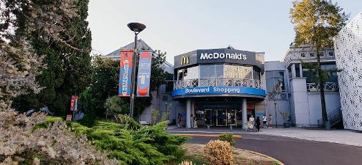
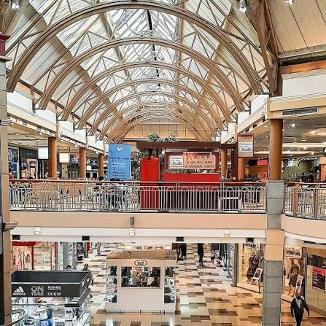

Parada 2 de 4 · Estás en: Boulevard Adrogué
Boulevard Adrogué
Adrogué, Provincia de Buenos Aires
Propuestas comerciales, gastronómicas y culturales: moda boutique, gastronomía artesanal, cafeterías, espacios de arte y cultura, lifestyle y comercios con productos especiales.
- Moda boutique
- Gastronomía artesanal
- Cafeterías
- Arte y cultura
- Lifestyle

Experiencias
Moda boutique
Locales de moda con propuestas de autor.
Gastronomía artesanal
Cafeterías y restaurantes de cocina artesanal.
Arte y cultura
Espacios de arte y propuestas culturales itinerantes.
Productos especiales
Comercios de lifestyle y productos especiales.
Galería de fotos

Información útil
- Dirección
- Brown 700, Adrogué, Provincia de Buenos Aires
- Horarios
- Lunes a sábado de 10:00 a 21:00 hs. Domingos de 12:00 a 20:00 hs.
- Transporte
- Opciones de transporte público que facilitan la llegada.
- Accesos
- Diferentes accesos al establecimiento.
- Servicios
- Servicios para los visitantes dentro del shopping.
- Duración sugerida
- Entre 2 y 3 horas.
Recomendaciones
- Tener en cuenta que los horarios de los domingos son más reducidos (de 12:00 a 20:00 hs).
- Ideal para visitar en un horario de tarde tranquilo disfrutando de las opciones gastronómicas.
- Consultar previamente las propuestas culturales o de arte itinerantes que se organicen en el predio.